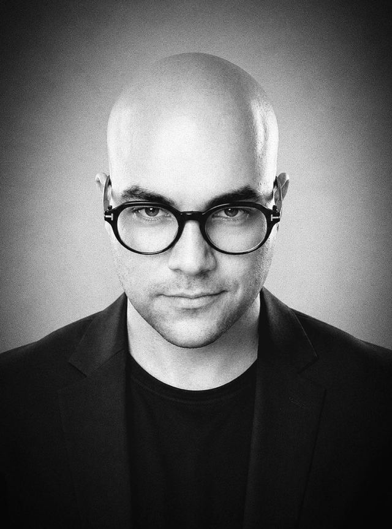
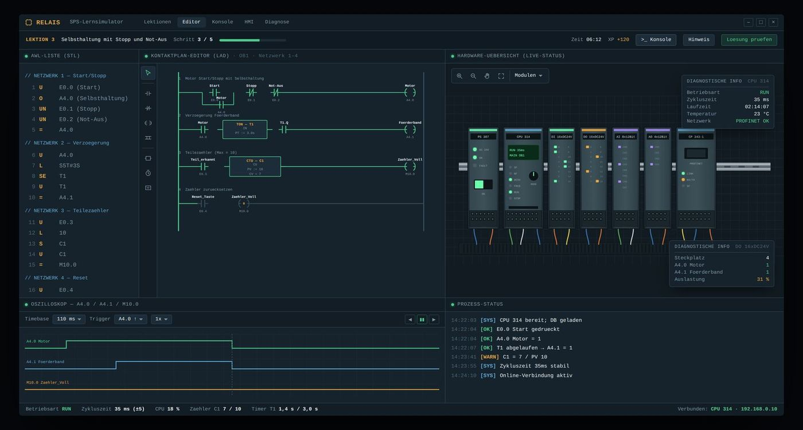
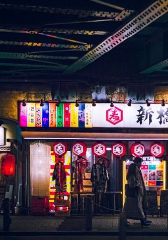
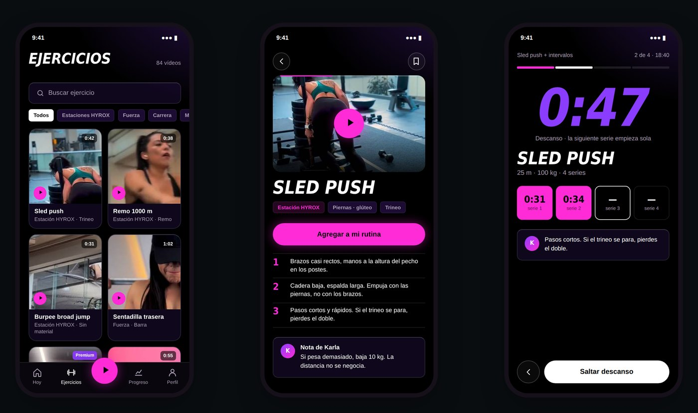

Interfaces, die unter Druck lesbar bleiben.
Ich entwerfe Oberflächen für Leitstände, Editoren und Monitoring, und baue sie selbst.
- ⅓der Widgets der Website 4.0 (TA Bildungszentrum)
- 19Hosts im eigenen Security-Lab
- 6 Wo.Kundenprojekt Angular + Symfony

Vier Werkzeuge für den Desktop, zwei Apps fürs Telefon.
IronGrid 2.0
Ein Dashboard, das 19 reale Hosts in fünf Zonen in Sekunden lesbar macht.

Alert-Feed · simuliert
RELAIS
SPS lernen wie ein Spiel, ohne die Realität zu verbiegen.

Selbsthaltung: Start, Stopp, Not-Aus
| U | E0.0 | |
| O | A4.0 | |
| UN | E0.1 | |
| UN | E0.2 | |
| = | A4.0 |
TONAL
Grading wie im Schnittraum, für ein einzelnes Bild.

Scopes aus echten Pixeln

Security Monitor
Ein Code, jede Marke: Theme-Tokens zur Laufzeit.

KFIT
Vom Instagram-Video zur Routine, die man verfolgen, protokollieren und verbessern kann.

Verstehen. In Code prototypen. Prüfen.
„Ein klickbarer Entwurf ist ehrlicher als ein Bild: Er zeigt, was das System kann und wo es scheitert.“
Verstehen, bevor ich zeichne
Welche Daten gibt es wirklich, wer schaut darauf, in welcher Situation?
In Code prototypen
Statt statischer Mockups baue ich Oberflächen in HTML, CSS und SVG, mit echten Zuständen.
Prüfen und aufschreiben
Jede Case Study endet mit Entscheidungen, einer Iteration und dem, was noch fehlt.
Ein Beruf, zwei Hälften: Entwurf und Umsetzung.
Erst Kommunikationsdesign (Diplom, Düsseldorf, Note 1,4) und Agenturjahre in Interface- und Webdesign, dann Webentwicklung, weil mir das Übergeben von Entwürfen nicht mehr reichte. Heute entwerfe und baue ich Oberflächen selbst.
Zuletzt Fullstack-Entwickler bei der TA Bildungszentrum GmbH (PHP, Symfony, Twig). Ein eigenes OT/IT-Labor liefert die Fachtiefe für IronGrid, RELAIS und den Security Monitor.
Abseits vom Bildschirm: ein Ultraschall-Radar auf Arduino mit Gate-Treibern und MOSFET-Halbbrücken, Rust auf Codeforces, und Schnee, so viel wie möglich.
- 2025 – 2026TA Bildungszentrum GmbH
Fullstack-Entwickler (Praktikum): PHP 8.4, Symfony, Twig · Website 4.0 · Mailing-Automation (Brevo, n8n, LLM) - 2022 – 2025Höhere Berufsausbildung Webentwicklung
DAW · EQF Level 5 · Java als Kernsprache - 2017 – heuteIntêrstate Magazine
Mitgründer & Editorial Director - 2016 – 2018Hesse Design GmbH
Designer, Düsseldorf / Shanghai: Web, Interfaces, Editorial - 2015 – 2019Freiberuflicher Designer
u. a. SMS Group, Willy Heckmann - 2011 – 2015Diplom Kommunikationsdesign
IN.D Düsseldorf · Note 1,4